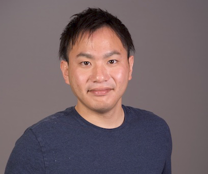
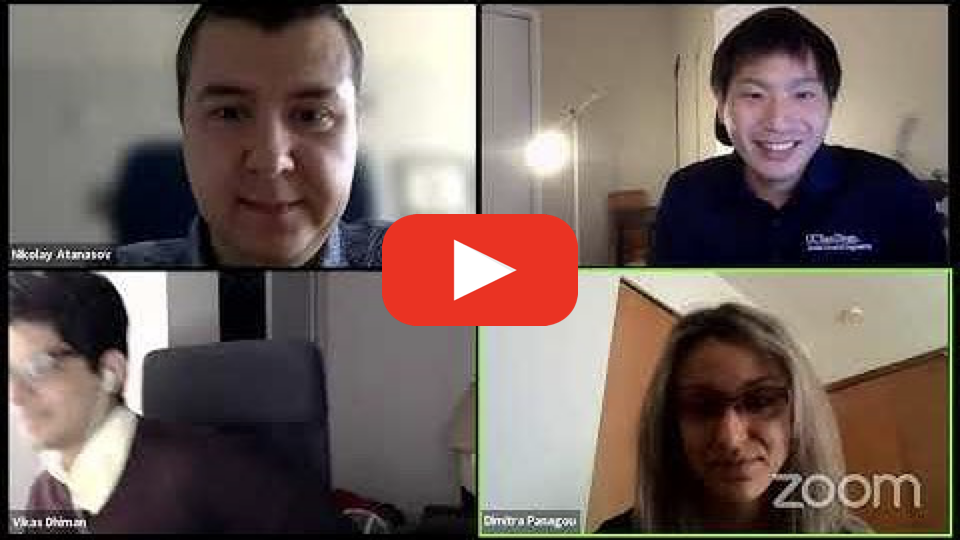
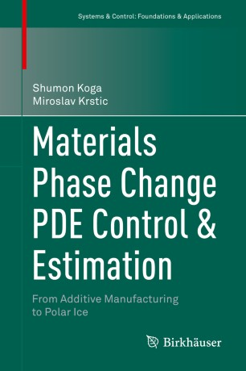
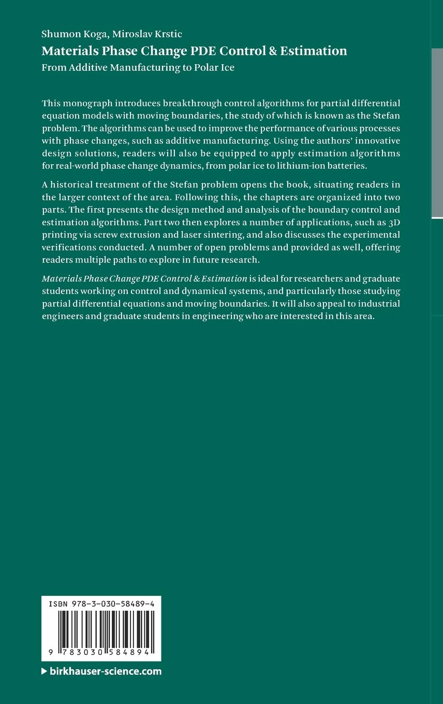
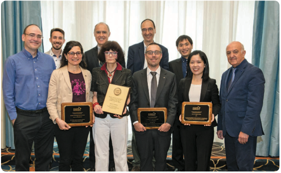

Shumon Koga
|  |
Biography: I am currently a Staff Engineer at Honda Research and Development (R&D). Until 2023 June, I was a Postdoctoral Scholar in the Department of Electrical and Computer Engineering at the University of California, San Diego, where I was working in the Existential Robotics Laboratory (ERL) directed by Nikolay Atanasov. I received the Ph.D. degree in the Department of Mechanical and Aerospace Engineering at the University of California, San Diego. During PhD, I was working in Nonlinear and Adaptive Control Laboratory, under the supervision of Miroslav Krstic.
The core of my research interests is the control theory with applications to robotics and energy systems. My current research is focused on perception and planning for robotics, in particular, active perception, Simultaneous Localization and Mapping (SLAM), safe navigation, and distributed intelligence, by means of control theory and machine/reinforcement learning. My doctoral research interests include control of PDE models, extremum seeking, and their applications to energy management, advanced manufacturing, climate dynamics, transportation, neuroscience. shumonkoga@gmail.com CV |
News
(Oct. 2023) Presented a poster about our work "Hide and Seek with Visibility Constraints using Control Barrier Functions" at IROS 2023 Workshop on Integrated Perception, Planning, and Control for Physically and Contextually-Aware Robot Autonomy
(Sep. 2023) Submitted a proposal for ICRA 2024 workshop, co-organizing with Pio Ong, Vikas Dhiman, Nikolay Atanasov, Dimitra Panagou, as "2nd Workshop of Safe Robot Control with Learned Motion and Environment Models".
(July 2023) Started a new job as Staff Engineer at Honda Research and Development, in Tokyo, Japan! I am excited to start working on cooperative intelligence for automated driving.
(June 2023) Gave an oral presentation (top 16 papers from 115 accepted papers) at L4DC 2023, "Policy Learning for Active Target Tracking over Continuous SE(3) Trajectories".

(May 2023) Gave a presentation at ICRA 2023, "Learning Continuous Control Policies for Information-Theoretic Active Perception".
(Mar. 2023) Gave faculty candidate talk at NYU/ECE and UC Merced/CS.
(Mar. 2023) Our paper "Safe PDE Backstepping QP Control With High Relative Degree CBFs: Stefan Model With Actuator Dynamics", has been published at IEEE Transactiosn on Automatic Control.
(Jan. 2023) Got two papers accepted at ACC 2023, "Control Synthesis for Stability and Safety by Differential Complementarity Problem" (together with L-CSS) and "Event-Triggered Safe Stabilizing Boundary Control for the Stefan PDE System with Actuator Dynamics".
(Dec. 2022) Gave a talk at "REALM" in MIT/Aero.
(July 2022) Got a paper accepted at IROS 2022, "Active Mapping via Gradient Ascent Optimization of Shannon Mutual Information over Continuous SE(3) Trajectories".
(May 2022) Attended ICRA and ACC 2022 in person and presented some papers for the first time after two years!
(Feb. 2022) Our paper "State Estimation of the Stefan PDE: A Tutorial on Design and Applications to Polar Ice and Batteries" got published at Annual Reviews in Control.
(Feb. 2022) Got three papers accepted at ACC 2022, about "active SLAM", "safe control of PDE by CBF-QP", and "neuron growth control".
(June 2021) Gave a talk at "DPS Online Seminar". [Slides]
(June 2021) ICRA'21 workshop "Safe Robot Control with Learned Motion and Environment Models" I was co-organizing got succesfully held!
(Mar. 2021) Our paper "Towards Implementation of PDE Control for Stefan System: Input-to-State Stability and Sampled-Data Design" got published at Automatica.
(Dec. 2020) My book coauthored with Prof. Krstic, "Materials Phase Change PDE Control and Estimation: From Additive Manufactuing to Polar Ice", got published at Birkhäuser.
 
Education
Ph.D. in Mechanical and Aerospace Engineering, University of California, San Diego, 2020, Advisor: Prof. Miroslav Krstic
M.S. in Mechanical and Aerospace Engineering, University of California, San Diego, 2016
B.S. in Applied Physics, Keio University, 2014
Professinal Appointments
Staff Engineer, Honda Research and Development, Co. Ltd., Tokyo, Japan, 2023/7-
Postdoctoral Scholar, University of California San Diego, Department of Electrical and Computer Engineering, La Jolla, CA, 2020/7-2023/6
Research Intern, Mitsubishi Electric Research Laboratories (MERL), Cambridge, MA, 2018/6-2018/9
Visiting Appointments
Visiting Student Research Program, NASA Jet Propulsion Laboratory (JPL), Pasadena, CA, 2017/10-2017/11
Visiting Research Scholar, Rensselaer Polytechnic Institute (RPI), Troy, NY, 2017/6-2017/7
Awards
Robert E. Skelton Systems and Control Dissertation Award, UCSD Center for Control Systems and Dynamics, 2020
O. Hugo Schuck Best Paper Award, American Automatic Control Council, 2019

(Photo from conference reports in IEEE Control Systems Magazine.)Outstanding Graduate Student Award, UCSD/MAE, 2018